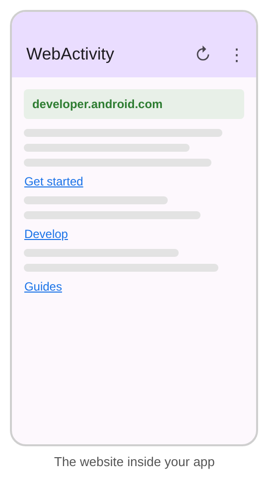

Introduction
Lab Activity 6 · Week 7 · CSC557 Mobile Programming
Objectives
- Adding an app bar with a
MaterialToolbarand an options menu - Handling menu clicks with
onOptionsItemSelected() - Showing a floating context menu on a long-press, with a submenu
- Displaying web pages with a
WebView: permission,WebViewClient, JavaScript and Back navigation
Duration: 2 hours. You need: Android Studio, an emulator or Android phone, and an Internet connection.
| Part | What you do | Time | Marks |
|---|---|---|---|
| Activity 1: Options menu | Add an app bar with action icons and an overflow menu | 30 min | – |
| Activity 2: Context menu | Long-press the notice to copy, highlight and recolour it | 30 min | – |
| Activity 3: WebView | Open a website inside the app | 40 min | – |
| Activity 4: Bug hunt | Predict what five broken snippets do | 20 min | – |
| Total | 120 min | – |
The questions in the activities are for class discussion and are not marked.
How to use this lab
This lab does not give you all the code. Some parts are complete, some have blanks, and some give you only a specification. You need the slides, the earlier labs and your own thinking to finish them. The parts look like this:
// grey italic: code that is already in the file// yellow: new code that is given to you, type it in// red: a TODO or a ____ blank that YOU must complete| Box | What it means |
|---|---|
| PREDICT FIRST | Write down what you think will happen before you run the app. Then run it and compare. A wrong guess is fine: it is how you learn. |
| YOUR TURN | A task with a specification and no code. Build it from what you learned in the activity. |
| CHECKPOINT | Show your app to the lecturer or the person beside you before you move on. |
| Discussion | Questions we discuss in class. They are not marked. |
You build one app, CampusInfo, through Activities 1 to 3. It shows a campus notice that the user can share, copy, highlight and recolour, and it opens the campus website inside the app.
Activity 3 – Displaying web pages with WebView
A WebView shows web pages inside your app. When the user taps the globe icon, we open a second Activity that loads the campus website. In this lab we use https://developer.android.com as the “campus website”.
- Choose File › New › Activity › Empty Views Activity. Name it
WebActivityand keep the layout nameactivity_web. Click Finish. - Open activity_web.xml. Change the root to a vertical
LinearLayoutwithandroid:id="@+id/main", and copy theMaterialToolbarfrom activity_main.xml into it. - In MainActivity, replace the Toast in the
action_webbranch with an explicit Intent that startsWebActivityand passes the address as an extra:java/com/example/campusinfo/MainActivity.java (in onOptionsItemSelected)if (id == R.id.action_web) { // TODO 6: start WebActivity with an explicit Intent and // putExtra("url", "https://developer.android.com") return true; } - In WebActivity.java, set up the toolbar and load the address from the Intent. Add the field and the lines at the end of
onCreate(), and fill in the two blanks:java/com/example/campusinfo/WebActivity.javapublic class WebActivity extends AppCompatActivity { private WebView webView; @Override protected void onCreate(Bundle savedInstanceState) { // ... the template code stays ... MaterialToolbar toolbar = findViewById(R.id.toolbar); setSupportActionBar(toolbar); webView = findViewById(R.id.webView); String url = getIntent().getStringExtra(____); webView.loadUrl(____); }} - Fix the problem: open manifests/AndroidManifest.xml and add the missing line from slide 38 above the
<application>tag. Run the app again: the page should load.manifests/AndroidManifest.xml<manifest xmlns:android="http://schemas.android.com/apk/res/android" ...> <!-- TODO 7: the permission from slide 38 --> <application ... /></manifest>
- By default, a WebView asks the system to open links, so Android opens them in the browser. To keep links inside the app, give the WebView a
WebViewClient. Many sites also need JavaScript, which is off by default. Add these lines beforeloadUrl():java/com/example/campusinfo/WebActivity.java (in onCreate, before loadUrl)webView.setWebViewClient(new WebViewClient()); // open links inside the WebView // TODO 8: enable JavaScript (slide 39: getSettings() and setJavaScriptEnabled) - Run the app and tap a link again. It should now open inside the WebView.
- Now we want more control: pages on developer.android.com stay in the app, but links to other sites open in the phone’s browser. This is the
MyWebViewClientidea from slide 40. The slide uses the oldshouldOverrideUrlLoading(WebView, String), which is deprecated. Here is the current version with blanks. Add it inside the WebActivity class:java/com/example/campusinfo/WebActivity.java (inside the class)private class MyWebViewClient extends WebViewClient { @Override public boolean shouldOverrideUrlLoading(WebView view, WebResourceRequest request) { Uri uri = request.getUrl(); if ("developer.android.com".equals(uri.getHost())) { return ____; // our site: let the WebView load it } // TODO 9: open every other link in the browser with an ACTION_VIEW Intent return ____; // we handled it: the WebView must not load it } }Then change
new WebViewClient()tonew MyWebViewClient(). To test, scroll to the bottom of the page and tap a link to another site, for example YouTube or GitHub. - Slide 41 handles Back with
onKeyDown(KEYCODE_BACK, …). New apps target Android 16, where the system uses predictive back, so the Back key no longer reachesonKeyDown(). The current way is anOnBackPressedCallback. Add it at the end ofonCreate()and fill in the two blanks with methods from slide 41:java/com/example/campusinfo/WebActivity.java (end of onCreate)getOnBackPressedDispatcher().addCallback(this, new OnBackPressedCallback(true) { @Override public void handleOnBackPressed() { if (webView.____()) { // is there a previous page? webView.____(); // go to it } else { setEnabled(false); // stop catching Back getOnBackPressedDispatcher().onBackPressed(); // close WebActivity } } }); - Run the app, open a few pages and press Back. You should step back through the pages, and then return to MainActivity.
Discussion 3
a. In MyWebViewClient, what does return true mean, and what does return false mean?
b. The slides say a WebView is helpful for information that is updated regularly. Give one example where a WebView is a good choice and one where a normal Android screen is better.
c. JavaScript is off by default in a WebView. Why do you think Android does that?
Activity 4 – Bug hunt
Each snippet below has one mistake. Work with the person beside you. For each one, predict what the user sees: a build error, a crash, a wrong result, or nothing visible. Write your answers in the last column. Then try two of them in your CampusInfo project to check, and undo the change afterwards.
| # | Code | What happens? (your prediction) |
|---|---|---|
| 1 | onCreateOptionsMenu() ends with return false; | |
| 2 | In menu_main.xml, the Share item uses android:showAsAction="always" instead of app:showAsAction | |
| 3 | In onCreate(), registerForContextMenu(tvNotice); is placed before tvNotice = findViewById(R.id.tvNotice); | |
| 4 | MainActivity sends putExtra("url", "developer.android.com") (no https://) | |
| 5 | In onContextItemSelected(), the Red branch changes the colour but has no return true; |
Discussion 4
a. Which bugs did Android Studio warn you about before you ran the app? Which ones could you only find by running it?
b. In bug 5, the colour still changes. So what is the boolean that the menu methods return actually for?
Troubleshooting
| Problem | Likely cause and fix |
|---|---|
| No app bar at all | The MaterialToolbar is missing from the layout, or setSupportActionBar(toolbar) is not called. |
| The menu does not appear | onCreateOptionsMenu() is missing, inflates the wrong file, or returns false. |
| Every item is in the overflow, even with ifRoom | Use app:showAsAction with the xmlns:app namespace, not android:showAsAction. |
| Error: constant expression required | Resource ids are not constants in new projects. Use if … else if instead of switch. |
| Long-press does nothing | The view is not registered with registerForContextMenu(). |
| Webpage not available: net::ERR_CACHE_MISS | The INTERNET permission is missing from AndroidManifest.xml. |
| Links open in Chrome | Call setWebViewClient(...) before loadUrl(). |
| Back closes WebActivity at once | Add the OnBackPressedCallback and check canGoBack(). |
| Cannot resolve symbol WebView, Uri, Color … | Add the import with Alt + Enter (Option + Enter on a Mac). |